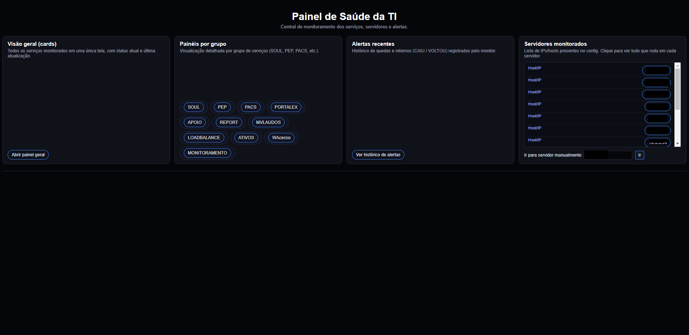
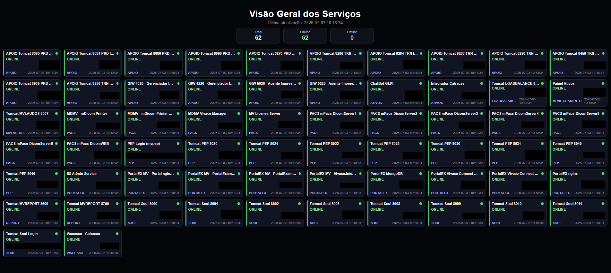
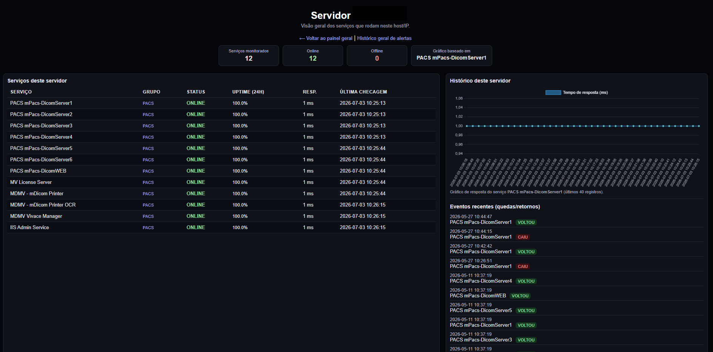
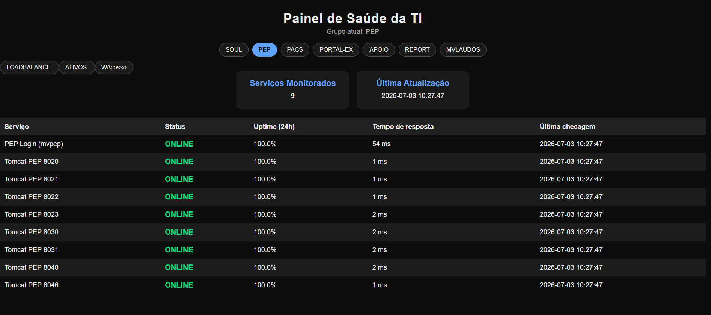
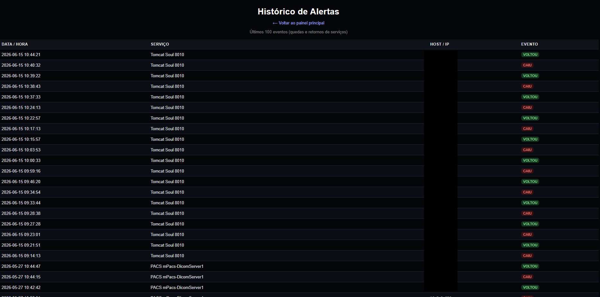

Monitoramento de Serviços
Plataforma de monitoramento em tempo real voltada à supervisão de serviços críticos hospitalares e sistemas de Prontuário Eletrônico (PEP). O sistema assegura a disponibilidade da infraestrutura ao monitorar continuamente status, latência (ms) e uptime de APIs, servidores e bancos de dados, possibilitando a detecção proativa de falhas e mitigação de indisponibilidades que possam impactar o atendimento.

Sobre o Sistema
Este sistema centraliza o monitoramento de serviços críticos, permitindo identificar falhas antes que impactem os usuários finais.
Objetivo
Garantir disponibilidade dos serviços hospitalares em tempo real.
Problema
Falhas eram detectadas somente quando usuários reclamavam.
Solução
Monitoramento automatizado com alertas e status centralizado.
Resultado
Redução drástica no tempo de resposta de incidentes.
Alertas via Telegram
O sistema envia notificações automáticas via Telegram sempre que um serviço ou equipamento fica indisponível, permitindo resposta rápida da equipe de TI.
Interface do Sistema
Principais telas do sistema de monitoramento de serviços.

Dashboard
Visão geral centralizada e em tempo real do ecossistema de serviços, exibindo de forma clara a quantidade total de serviços operantes, falhas ativas e alertas críticos.

APIs
Módulo focado no monitoramento de integridade (Health Check), controlando o Uptime das últimas 24h, tempo de resposta em milissegundos e apresentando gráficos de latência e consumo de recursos de rede e o status de comunicação dos endpoints.

Banco de Dados & Servidores
Interface focada no monitoramento contínuo de endpoints e serviços integrados. O painel consolida dados de integridade, calcula a taxa de Uptime histórico e mede o tempo de resposta de cada serviço individualmente, permitindo uma análise preditiva de gargalos de infraestrutura e otimização de performance.

Logs
Histórico cronológico e centralizado de eventos do sistema, registrando quedas, oscilações e retornos de serviços com foco em auditoria e rápida resolução de incidentes.
Como Funciona
Fluxo de monitoramento dos serviços críticos.
Serviços
APIs, sistemas e bancos monitorados.
Verificação
Checagem automática de status.
Alertas
Notificação de falhas em tempo real.
Dashboard
Visualização centralizada dos serviços.
Desafios
Principais problemas resolvidos no sistema.
Detecção em tempo real
Monitoramento contínuo sem impacto no desempenho.
Alta disponibilidade
Garantir estabilidade dos serviços críticos.
Integração com banco
Conexão com SQL Server e validação de status.
Escalabilidade
Arquitetura preparada para crescimento do hospital.
Alertas em tempo real
Implementei integração com a API do Telegram para envio de mensagens automáticas quando um serviço crítico apresenta falha ou fica indisponível.
Gostou deste sistema?
Esse projeto faz parte da infraestrutura hospitalar que desenvolvi para monitoramento e automação de serviços críticos.